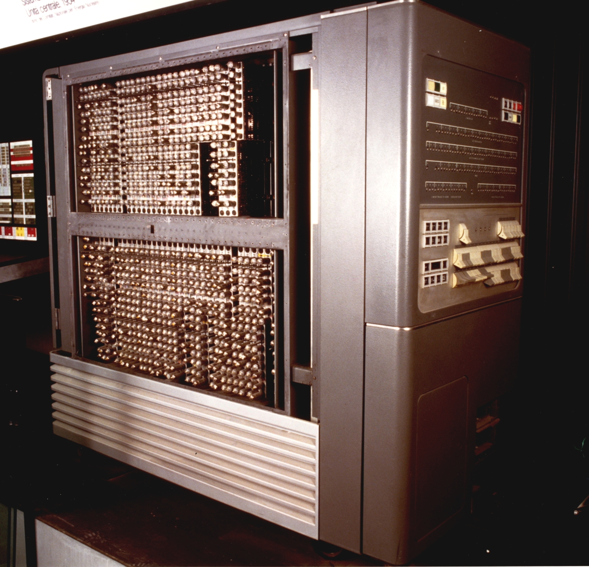

IBM 704
Introduced in 1954, the IBM 704 was a groundbreaking large-scale scientific computer that set the standard for early high-speed computing. Designed primarily for complex engineering and mathematical applications, it was the first mass-produced machine to feature floating-point arithmetic hardware, dramatically accelerating scientific calculations. Beyond its vacuum-tube architecture and reliable magnetic-core memory, the IBM 704 is famous for serving as the development platform for foundational programming languages like FORTRAN and LISP, cementing its legacy as a cornerstone of modern computer science.